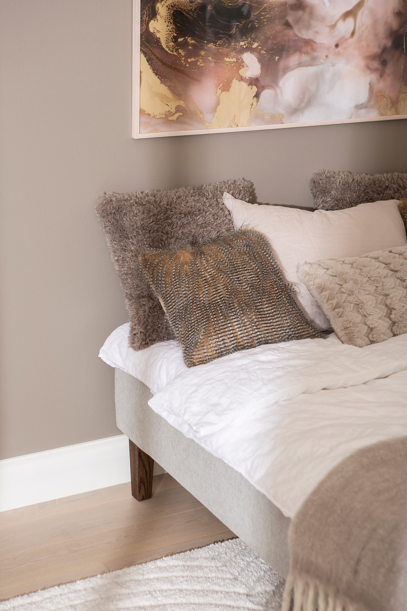
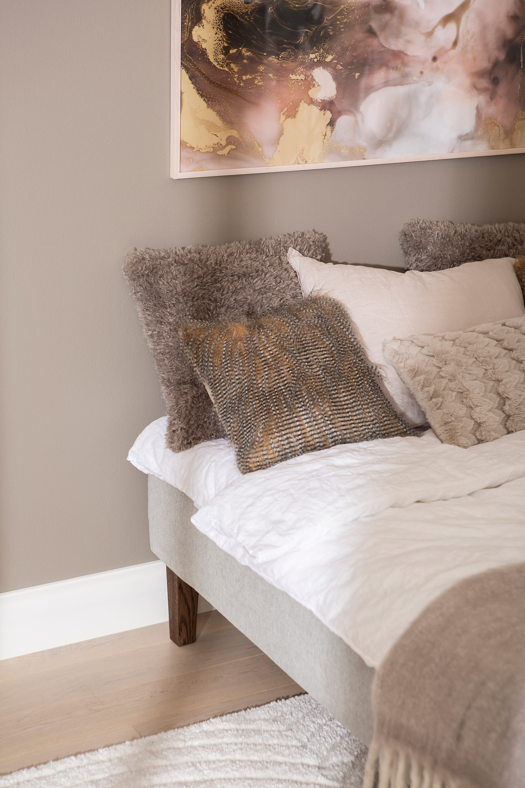

Moon Silver divan bed 120x200, pocket 5-zone. Primo 84 light grey
197659
 

Description
Discover the perfect blend of comfort, style, and practicality with the Moon Silver divan bed in size 120x200 cm. Part of the NEST & LIVING collection, this bed offers a premium tier experience with its Silver classification, focusing on quality features and versatile customization options.
Upholstered in elegant Primo 84 light grey fabric, the bed is designed to complement modern bedroom interiors with a fresh and neutral tone. Its durable wood frame ensures long-lasting stability, supported by tall, smoked ash cone-shaped legs that lend an airy and refined appearance while facilitating easy cleaning underneath.
The integrated 5-zone pocket spring mattress adapts individually to your body curves, providing optimal support that enhances sleep quality and spinal alignment. Without a mattress topper or included headboard by default, the bed can be personalized with optional accessories to suit your exact comfort preferences.
Backed by a 4000-day quality guarantee, the Moon Silver divan bed delivers unmatched durability and value. Maintenance is hassle-free with straightforward care instructions recommending regular vacuuming and gentle cloth wiping to maintain upholstery freshness.
Ideal for those seeking a versatile and elegant sleeping solution, this Silver tier divan bed invites you to elevate your bedroom ambiance with lasting comfort and style.
Technical specifications
| Size | 120 × 200 cm |
|---|---|
| Color | Light grey (Primo 84 fabric) |
| Comfort system | 5-zone pocket spring mattress |
| Frame | Durable wood with a 4000-day quality guarantee |
| Legs | Tall smoked ash cone-shaped wooden legs (23 cm height) |
| Includes | Divan bed frame and mattress (no mattress topper or headboard included) |
| Customization | Compatible with various mattress toppers and headboards available separately |
| Care instructions | Regular vacuuming and wiping upholstery with a damp cloth maintain appearance and durability |
| Tier | Silver |